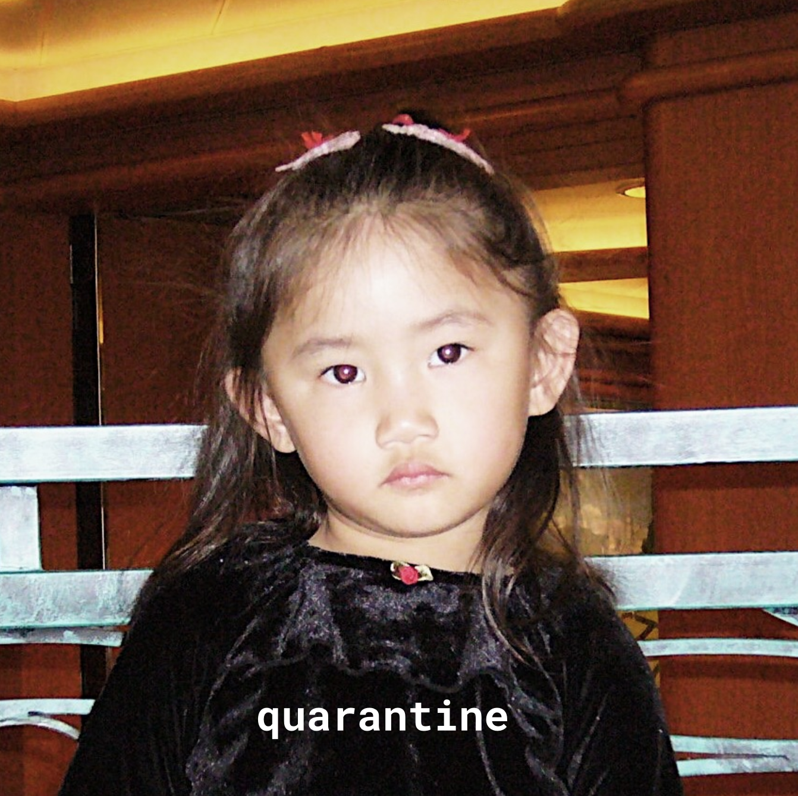
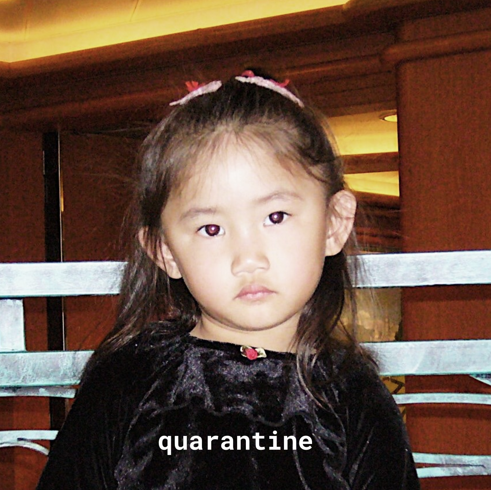

written by: elizabeth and sophia lin, sung by: sophia lin
everyday is just like yesterday
why am i up at 8
if there's just nothing to do
anyway
slow days
watching the sun just rage
waiting to turn the page
why are we here if they closed
the gates
blue skies
watching me from
my house all day
chorus
this world
is slowly fading away
can we get a final
take
before we're left in
memory lane
hey wait
just keep my head up all day
i'm gonna get my own
take
when i look back in
memory lane
to these days
soon we'll find the light
someday